Developer | HTML | CSS | JAVASCRIPT

Você observou a logo no topo da página, ainda não?
Então dê uma olhadadinha por favor!
Sou como essa logo, parte humana, onde vocês poderão enxergar, criatividade, lealdade
com a equipe, companheirismo, dedicação e a minha aliança em somar com todos ao meu redor.
E a metade ciborgue fala sobre meu perfeccionismo, persistência, versatibilidade. E a fusão dessas faces, me levaram a conquistar um olhar diferenciado. O olhar do futuro no
presente.
Esse sou eu, com o olhar do futuro no presente e com apercepção de que não a
nada que não possa melhorar ou ser criado.
Deixe seu contato!